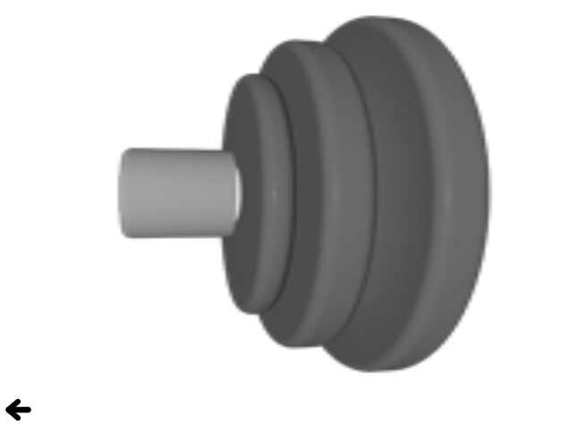

Qt Quick Examples - Image Elements
This is a collection of QML examples relating to image types.

Image Elements is a collection of small QML examples relating to image types. For more information, visit Use Case - Visual Elements In QML.
Running the Example
To run the example from Qt Creator, open the Welcome mode and select the example from Examples. For more information, visit Building and Running an Example.
Scaling with BorderImage
BorderImage shows the various scaling modes of the BorderImage type by setting its horizontalTileMode and verticalTileMode properties.
Image Fill
Image shows the various fill modes of the Image type.
Shadow Effects
Shadows shows how to create a drop shadow effect for a rectangular item using a BorderImage:
BorderImage {
anchors.fill: rectangle
anchors { leftMargin: -6; topMargin: -6; rightMargin: -8; bottomMargin: -8 }
border { left: 10; top: 10; right: 10; bottom: 10 }
source: "shadow.png"
}
Sprite Animations with AnimatedSprite
AnimatedSprite shows how to display a simple animation using an AnimatedSprite object:
AnimatedSprite {
id: sprite
anchors.centerIn: parent
source: "content/speaker.png"
frameCount: 60
frameSync: true
frameWidth: 170
frameHeight: 170
loops: 3
}
The sprite animation will loop three times.
Sprite Animations with SpriteSequence
SpriteSequence demonstrates using a sprite sequence to draw an animated and interactive bear. The SpriteSequence object defines five different sprites. The bear is initially in a still state:
Sprite{
name: "still"
source: "content/BearSheet.png"
frameCount: 1
frameWidth: 256
frameHeight: 256
frameDuration: 100
to: {"still":1, "blink":0.1, "floating":0}
}
When the scene is clicked, an animation sets the sprite sequence to the falling states and animates the bear's y property.
SequentialAnimation {
id: anim
ScriptAction { script: image.goalSprite = "falling"; }
NumberAnimation { target: image; property: "y"; to: 480; duration: 12000; }
ScriptAction { script: {image.goalSprite = ""; image.jumpTo("still");} }
PropertyAction { target: image; property: "y"; value: 0 }
}
At the end of the animation the bear is set back to its initial state.